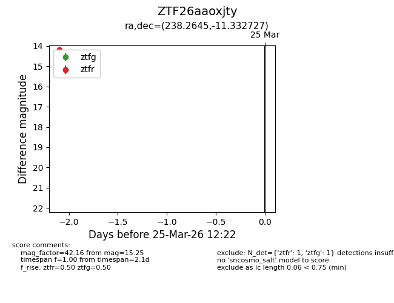
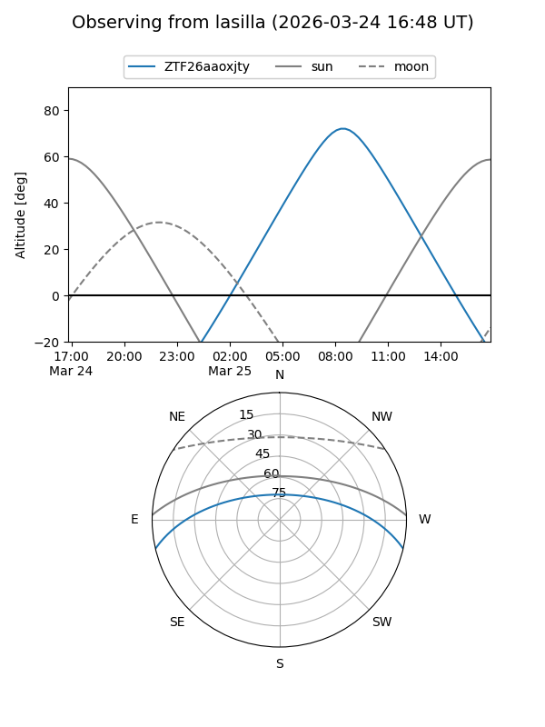
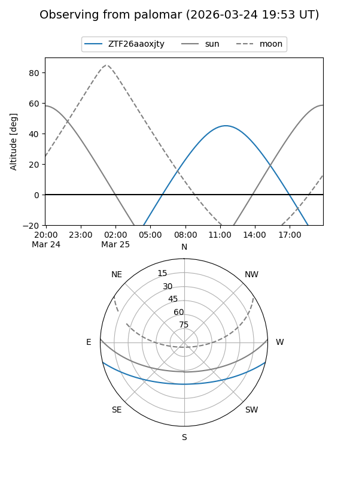

ZTF26aaoxjty
Target ZTF26aaoxjty at 2026-03-25 12:24
Aliases and brokers:
FINK: link
Lasair: link
ALeRCE: link
alt names
ZTF26aaoxjty (ztf,fink_ztf)
Coordinates:
equatorial (ra, dec) = 238.2645,-11.33273
equatorial (HMS+DMS) = 15:53:03.48,-11:19:57.82
galactic (l, b) = (357.9374,+31.53810)
Flags:
Photometry:
last ztfg=15.25, ztfr=14.18
1 ztfg, 1 ztfr detections
Lightcurve

Visibility


Additional plots